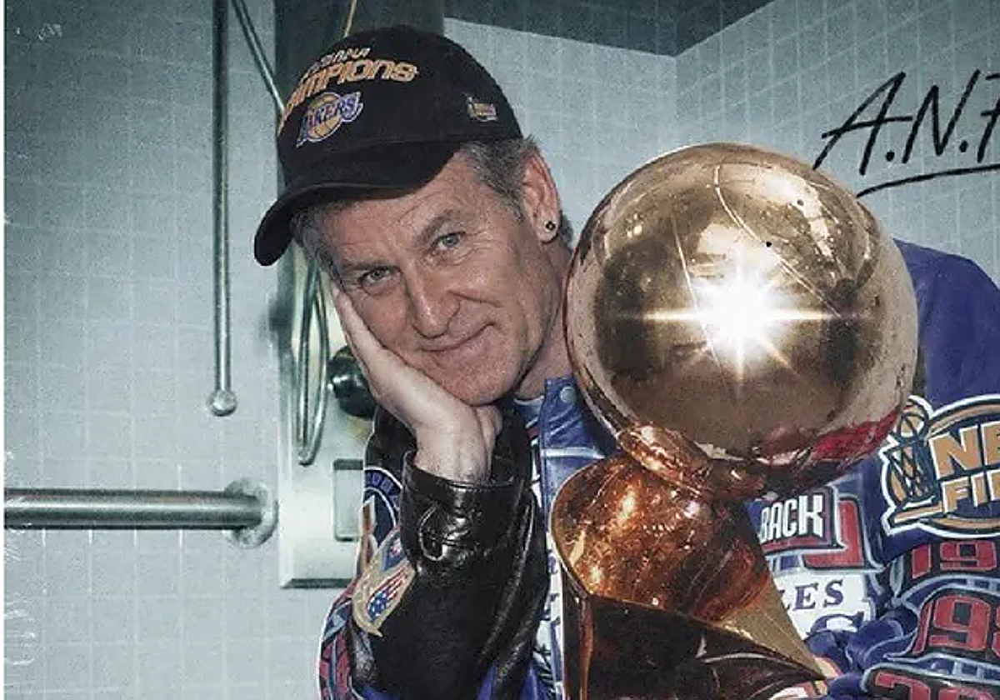

ANOTOP AT

DESCUBRE ANOTOP ↓EL MEME. LA MONEDA. LA COMUNIDAD.
CONOCE
ANOTOP AT
Una memecoin nacida de la cultura de internet. Únete a la comunidad y descubre el proyecto.
 TU MONEDA
TU MONEDAAQUÍ
EL UNIVERSO ANOTOP
EL MEME NO SE
QUEDA QUIETO.
Explora el contenido, crea tu propia versión y comparte el resultado. ANOTOP AT vive en la imaginación de su comunidad.
ANTES DE SEGUIR
PREGUNTAS
RÁPIDAS
¿Qué es ANOTOP AT?
Un proyecto de memecoin inspirado en la cultura de memes y en el contenido de internet.
¿Ya se puede comprar el token?
No. Todavía no hay una dirección oficial de contrato ni un enlace de compra confirmado. No envíes fondos a ninguna dirección.
¿Dónde puedo ver el contenido?
En la sección Memes y en el canal de TikTok enlazado desde esta web.
¿Puedo crear y compartir memes?
Sí. Usa el estudio para crear una imagen en tu dispositivo y compartirla donde quieras.